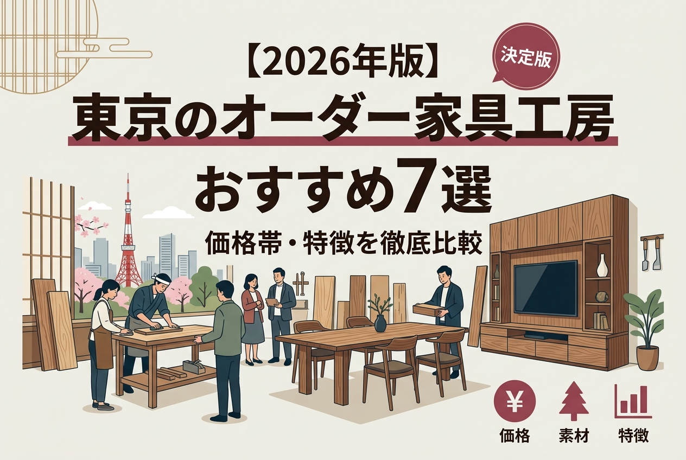
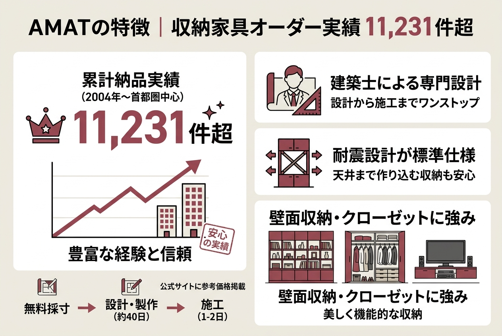
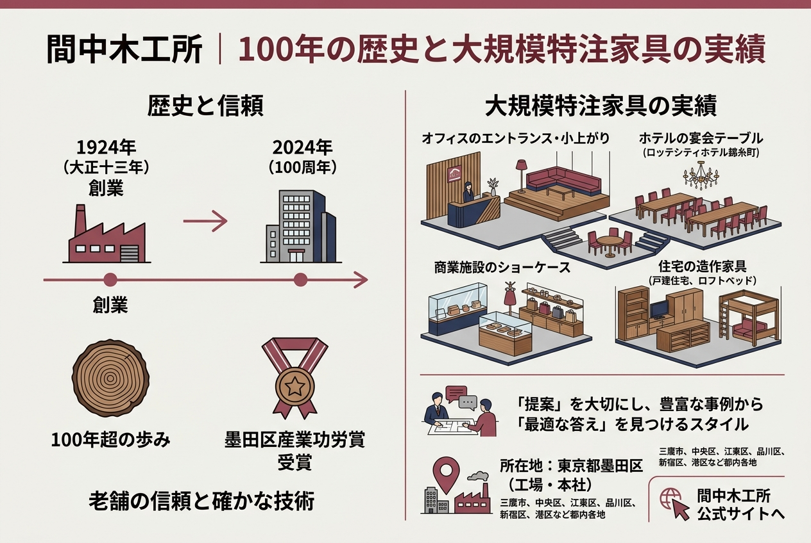

【2026年版】東京のオーダー家具工房おすすめ7選｜価格帯・特徴を徹底比較

「既製品だとサイズが合わない」「部屋の雰囲気にぴったりの家具がほしい」。そんなとき候補に上がるのがオーダー家具です。
ただ、東京だけでも工房の数はかなり多い。無垢材のテーブルが得意なところ、壁面収納に特化したところ、価格帯もバラバラで、正直どこから比較すればいいか迷います。
上位に出てくる工房のサイトを片っ端から読み込んで、料金・所在地・得意ジャンル・保証内容まで整理しました。7社の比較表から先に載せるので、まずはざっと眺めてみてください。
オーダー家具って相場がわからなくて不安…。どのくらいの予算を見ておけばいい？
AMATの公式サイトだと、フロートTVボードで約25万～87万円、壁面収納で約94万～187万円。この記事でAMATの参考価格表を載せているので見てみてください。
東京のオーダー家具工房7社 比較一覧
まず結論。7社の特徴を一覧にまとめました。
| 工房名 | 所在地 | 得意分野 |
|---|---|---|
| アクロージュファニチャー | 新宿区（神楽坂） | 無垢材テーブル・椅子・一枚板 |
| KAGURA（家具蔵） | 表参道・吉祥寺・自由が丘 | 無垢材全般（8樹種対応） |
| AMAT | 渋谷区（神宮前） | 壁面収納・システム収納 |
| 間中木工所 | 墨田区（錦糸町） | 特注家具・オフィス造作 |
| Sense Of Fun | 東久留米市 | デザイン家具・デジタル加工 |
| TIDAFIKA | 日野市 | 無垢材テーブル |
| WOODWORK | 東京（詳細は公式サイト参照） | オーダー家具・無垢天板 |

オーダー家具工房の選び方
用途で絞る
ダイニングテーブルを1台だけ作りたいのか、リビング全体の壁面収納を一括で依頼したいのかで、選ぶ工房はまったく変わります。
無垢材のテーブルや椅子なら、木材の目利きと手加工の技術がある小規模工房が得意。一方、壁面収納やキッチンカウンターは設計・施工・設置まで一貫で対応する工房のほうが話が早い。
- 作りたい家具の種類は？（テーブル/収納/キッチン/その他）
- 設置場所の採寸は済んでいる？
- 好みの樹種やイメージはある？
- 予算の上限はいくら？
- 納期の希望は？
素材と仕上げにこだわるなら
ウォールナット、チェリー、ナラ。樹種ひとつで色味も硬さも経年変化もまるで違います。
KAGURAは8樹種を扱っていて、ショールームで実物に触れられる。アクロージュファニチャーは一枚板の在庫も持っている。素材にこだわりたいなら、実物を見て触れる環境がある工房を選ぶのが間違いない。
予算と納期
AMATの参考価格を例に出すと、フロートTVボードで約25万～87万円、壁面収納で約94万～129万円。テーブルや椅子の価格は工房ごとに異なるので、直接見積もりを取るのが確実です。
製作期間は40日前後が多く、施工は1～2日。打ち合わせから納品まで2～3か月は見ておいたほうがいい。引っ越しや新築に合わせるなら、逆算して早めに動くのが鉄則。
アクロージュファニチャー｜神楽坂の無垢材家具工房
 出典: www.acroge-furniture.com
出典: www.acroge-furniture.com神楽坂駅から徒歩4分。住宅街のビルの2階に、小さな家具工房がある。
工房主の岸邦明氏は28歳で木工に目覚め、約20か国をキャンピングカーで巡ったあと、32歳で職業訓練校に入学。遠回りに見えるキャリアが、逆にほかの家具職人にはない感性を育てたのだと思います。
一級家具製作技能士の国家資格を持っていて、この資格を取得している工房は全体の1%にも満たないとのこと。資格が義務付けられていない業界だからこそ、あえて取得している点は信頼材料になる。
基本情報とアクセス


住所は東京都新宿区築地町6番地 北星ビル2階。電話は03-6265-0241。
営業時間は9:00～18:00で年末年始除く不定休。少人数体制のため、来店前に電話かメールで予約が必要です。
電車なら東西線の神楽坂駅から徒歩4分、有楽町線の江戸川橋駅から徒歩5分。車の場合は工房前に駐車可能。
木工教室で「作る」体験も
「KAGURAZAKA WOODWORKS」という木工教室も運営している。現役の家具職人に教わりながら、自分の家具を自分で作れる。手加工も木工機械も扱える本格的な内容で、DIY好きの人には面白い選択肢。
KAGURA（家具蔵）｜首都圏4店舗で無垢材家具を体感
 出典: www.kagura.co.jp
出典: www.kagura.co.jp「一生もの」という言葉をここまで本気で実践している家具ブランドは多くない。
KAGURAが扱う樹種は、ウォールナット・チェリー・ナラ・ホワイトアッシュ・ハードメープル・タモ・ケヤキ・サペリの8種。世界中から厳選した銘木を、自社の職人が「木組み」と「削り出し」で仕上げている。
- 8樹種から選べるので好みの色味・質感を見つけやすい
- 都内3店舗＋横浜1店舗で実物に触れて確かめられる
- フルオーダー対応（キッチンまで一貫で相談可能）
- 約150ページの無料カタログがある
店舗情報
表参道店は港区南青山5-9-4で、電話は03-3797-1700。隣の5-9-5には一枚板ギャラリーも併設されている。
吉祥寺店は武蔵野市吉祥寺本町2-13-5（0422-28-7227）、自由が丘店は目黒区自由が丘3-7-5（03-3723-6111）。いずれも10:30～19:00の水曜定休。
横浜元町店もあるので、横浜方面の人もアクセスしやすい。
樹種で迷ってるんだけど、ウォールナットとチェリーって何が違うの？
ウォールナットは重厚なグラデーションが特徴。チェリーは使い込むほど艶が出て飴色に変化します。KAGURAの店舗で並べて見ると違いが一目でわかるので、迷ったら実物を触りに行くのがおすすめ。
納品事例
公式サイトの事例写真を見ると、ナラのラウンドテーブル×チェア、チェリーのテーブル×キッチンのセットコーディネートなど、空間まるごとの提案が多い。単品注文もできるけれど、リビング・ダイニング全体を統一したい人に向いている。

AMAT｜収納家具のオーダーで11,231件超の実績
壁面収納やクローゼットを丸ごとオーダーしたいなら、AMATはまず候補に入る。2004年の事業開始から、首都圏だけで延べ11,231件以上の納品実績がある。
建築士が複数在籍していて、設計から施工までワンストップ。耐震設計が標準仕様なのも、収納家具を天井まで作り込むタイプの依頼では安心材料になります。
参考価格
公式サイトに参考価格が出ている。オーダー家具で価格を明示しているところは意外と少ないので、これはありがたい。
| アイテム | 参考価格（税込） |
|---|---|
| フロートTVボード | 247,500〜872,300円 |
| 収納重視フルサイズTVボード | 935,000〜1,287,000円 |
| 壁一面TVボード | 902,000〜1,870,000円 |
| クローゼット | 605,000〜1,606,000円 |
運搬・施工費は都内近郊で93,500〜198,000円が目安。打ち合わせと採寸は無料。
ショールーム
東京都渋谷区神宮前2-7-15 アンシャンテ1F。外苑前駅から徒歩8分、明治神宮前駅から徒歩10分。10:00～19:00で水曜・祝日定休。電話は03-5413-3003。
オンライン相談にも対応しているので、遠方の人や時間が取りにくい人はまずオンラインで話を聞くのもあり。

間中木工所｜大正十三年創業、100年超の特注家具
墨田区で1924年（大正十三年）に創業。2024年に100周年を迎えた老舗の特注家具メーカーです。
正直、個人宅のテーブル1台だけを頼むような工房ではない。住宅の造作家具、オフィスのエントランス、ホテルの宴会テーブル、商業施設のショーケースまで、スケールの大きい案件を得意としている。ロッテシティホテル錦糸町の開業15周年記念の家具も手がけている。
所在地と連絡先
工場は東京都墨田区立花5-9-5、本社は墨田区錦糸1-15-2 MFABRIQUE 601。電話は03-3613-9171。
施工事例には、三鷹市の戸建住宅、中央区のロフトベッド、江東区のオフィス造作、品川区のオフィスエントランスなど都内各地の案件が並ぶ。新宿区オフィスの小上りや港区ホテルの宴会テーブルまであって、対応範囲はかなり広い。
Sense Of Fun｜家具屋×設計事務所のデザインメーカー
 出典: sense-of-fun.com
出典: sense-of-fun.com東久留米市にある、ちょっと変わった立ち位置の工房。家具屋と設計事務所が一体になった「デザインメーカー」を名乗っている。
TBSドラマ「西園寺さんは家事をしない」への美術協力や、世界三大デザイン賞での銀賞受賞など、デザイン面での評価が高い。「Sense Of Studio」というショールーム兼イベントスペースや、デジタル木材加工機「ShopBot」を導入した「Sense Of Fab」も運営していて、ものづくりの幅が広い。
デザイン賞を取ってる工房って、やっぱり値段も高いの？
価格は公式サイトに載っていないので、直接問い合わせてください。Shopifyの通販サイトもあるので、既製品は価格を確認できます。
住所は東京都東久留米市八幡町1-1-57。西武池袋線の清瀬駅から徒歩23分、東久留米駅から徒歩27分。駐車場は1台分あり。電話は090-8641-0245。
TIDAFIKA（ティダフィカ）｜テーブル1000台超の無垢材工房
 出典: tidafika.com
出典: tidafika.comテーブル制作1000台以上。この数字が、この工房の実力をいちばん端的に表している。
20年以上の木工経験を持つ職人が2020年に独立して開業。東京都日野市に工房を構えている。百貨店への出展実績もあり、伊勢丹浦和や横浜高島屋でも販売している。
毎日触れるテーブルだからこそオーダーメイドで理想のサイズ・樹種を選びたい、という人にはぴったり。アフターケアも対応している。
住所は東京都日野市大字上田472-1。電話は050-3390-8571、受付は10:00～19:00。見積もりは無料で、サイズと樹種によって料金が変わるため、まずは相談を。
WOODWORK｜東京のオーダー家具と無垢天板
オーダー家具「TANA」シリーズや一枚板・無垢天板を扱う東京の工房。テーブル、デスク、椅子、ソファ、収納と品目は幅広い。
アップサイクル家具にも取り組んでいて、「Welcome COFFEE」というカフェスペースも併設。詳しい料金や営業時間は公式サイトで確認してください。

オーダー家具の注文から納品までの流れ
どの工房でも大まかなステップは共通している。AMATの公式サイトで紹介されている流れをベースに整理しました。
問い合わせ・相談
電話やメール、オンラインで希望を伝える。多くの工房が無料相談に対応。
打ち合わせ
ショールームでの対面、またはオンラインで詳細をすり合わせる。素材・サイズ・デザインを具体化。
採寸・プランニング・見積もり
自宅に来てもらい、設置スペースを実測。プランと見積もりが提示される。AMATの場合、採寸は無料。
契約・製作
正式契約後に製作開始。製作期間は約40日が目安。
施工・納品
自宅に搬入・設置して完了。施工は1〜2日程度。
よくある質問
まとめ
- 無垢材テーブル・椅子なら → アクロージュファニチャー、KAGURA、TIDAFIKA
- 壁面収納・システム収納なら → AMAT（参考価格あり、11,231件の実績）
- 住宅・オフィスの大型造作なら → 間中木工所（創業100年超）
- デザイン重視なら → Sense Of Fun（デザイン賞受賞）
- 無垢天板・アップサイクル家具なら → WOODWORK
上位記事を全部読み比べて感じたのは、工房ごとに得意分野がはっきり分かれていること。テーブル1台だけ頼みたい人と、リビング全体の収納を設計してほしい人では、そもそも相談先が違います。
特注家具はお客様のニーズに合わせ、ゼロからものづくりをスタートします。既製品ではできない自由な設計と手作りならではの丈夫さ、何より世界に一つの誂えた家具は、永く愛着を持って使い続けることができると、私たちは考えております。
間中木工所 公式サイトより
迷ったら、まず用途と予算を決めて、2〜3社に見積もりを取る。それがいちばん確実です。